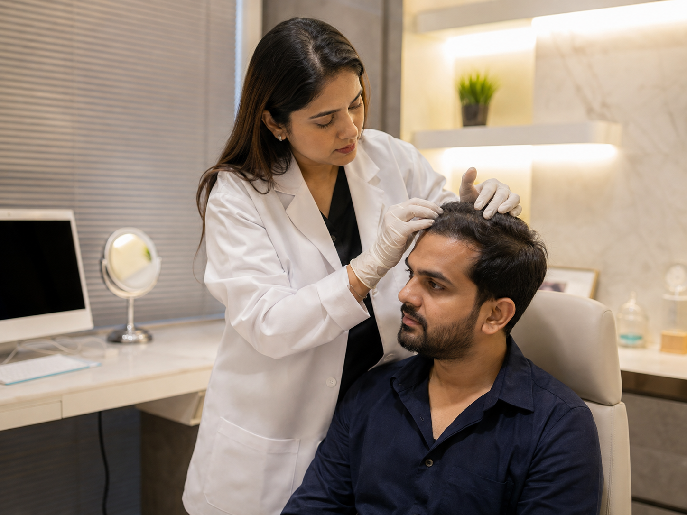
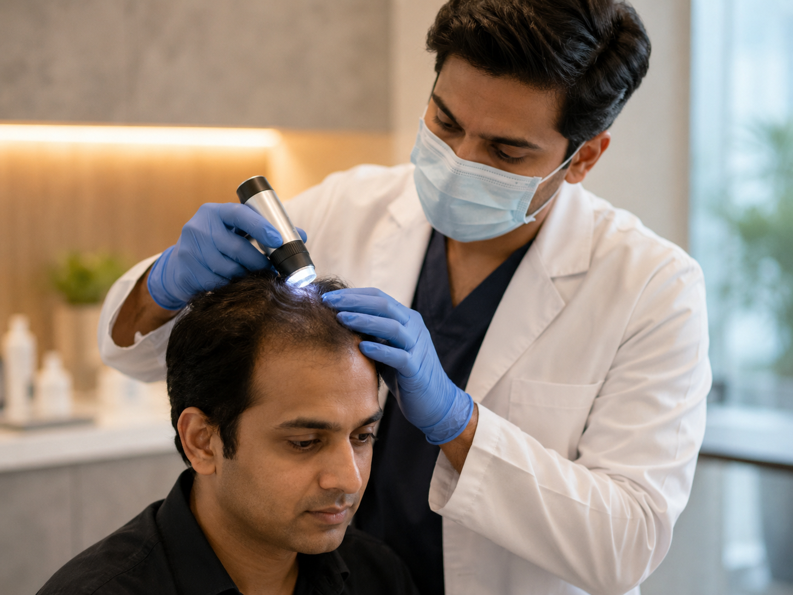

Step 01Scalp assessment
Hair density, part width, miniaturization, dandruff, inflammation and pattern are reviewed.
Hair loss treatment at SRENOVA begins with scalp evaluation and history because shedding, thinning and pattern loss can have different causes.
Medical therapy, PRP/GFC, nutritional correction, scalp care and transplant planning are considered only after the diagnosis is clearer.


Step 01Hair density, part width, miniaturization, dandruff, inflammation and pattern are reviewed.
The plan may include medicines, labs, scalp care or regenerative therapy depending on findings.
 Step 03
Step 03Hair growth takes time, so photos and follow-up help judge response realistically.
Hair fall can come from stress, deficiency, hormonal change, scalp inflammation, genetics, medicines or illness. Treating every case the same way wastes time.
SRENOVA separates temporary shedding from progressive pattern hair loss so clients understand whether the aim is control, regrowth support, density maintenance or transplant planning.
Understanding cause helps clients avoid jumping straight to expensive procedures.
Often progressive and needs maintenance.
Can follow stress, illness, crash diets or deficiencies.
Dandruff, itching or redness may need scalp treatment first.
May need transplant planning if donor area is suitable.
These points give visitors quick clarity before they message the clinic.
Scalp assessment guides treatment choice.
Hair response is gradual and needs follow-up.
Treatment can range from medicines to transplant.
Stopping care may allow loss to progress again.
Clear answers help clients compare options with more confidence.
Not always. Many patients benefit from diagnosis-led medical or regenerative therapy first. Transplant is for suitable stable areas of permanent loss.
It varies by cause. Some shedding patterns improve after the trigger is treated, while pattern hair loss needs longer-term maintenance.
They may support selected cases but are often part of a broader plan. Diagnosis decides whether they are appropriate.
The clinician may recommend tests when deficiency, thyroid, hormonal or medical causes are suspected.
Book a SRENOVA consultation for a careful assessment, realistic options and a treatment plan suited to your concern.